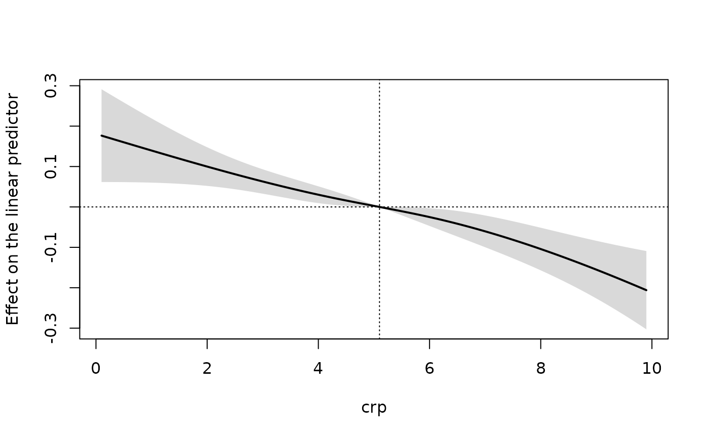

For a regressor entered through a regression spline (splines::ns(),
splines::bs()), a polynomial or linearly, returns the change in the
linear predictor when the regressor moves from the reference value
ref to each of values, with delta-method pointwise confidence limits.
Centering at a reference is what makes the curve comparable across
models: in fixed-effects fits the level is absorbed by the individual
effects. The scale is the link scale: a difference in mean for the
identity link, a log rate ratio for Poisson and negative binomial models,
a log odds ratio for the logit link. Use plot() to draw it.
Arguments
- object
a
"panglm"fit- variable
name of the regressor
- values
values at which to evaluate the curve; default: 100 points between the 1st and 99th percentile of the regressor in the fit
- ref
reference value; default: the median of the regressor
- vcov
NULL(the covariance stored on the fit) or a type passed tovcov.panglm()- level
confidence level of the pointwise band
Examples
data(copd)
fit <- panglm(fev1 ~ splines::ns(crp, 3), data = copd,
index = c("id", "visit"), model = "within", vcov = "cluster")
curve_crp <- effectcurve(fit, "crp")
head(curve_crp)
#> value estimate se lower upper
#> 1 0.1000000 0.1765138 0.05858363 0.06169198 0.2913356
#> 2 0.1989899 0.1724357 0.05652094 0.06165674 0.2832148
#> 3 0.2979798 0.1683591 0.05447000 0.06159989 0.2751184
#> 4 0.3969697 0.1642853 0.05243396 0.06151665 0.2670540
#> 5 0.4959596 0.1602158 0.05041601 0.06140218 0.2590293
#> 6 0.5949495 0.1561518 0.04841943 0.06125152 0.2510522
plot(curve_crp)
